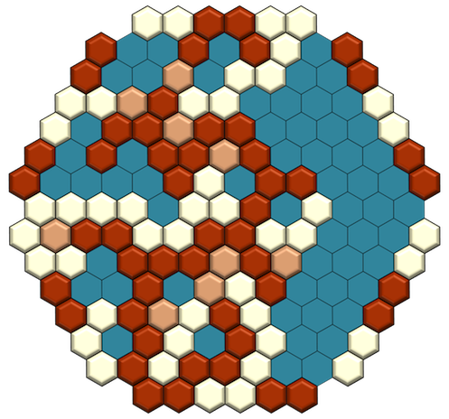
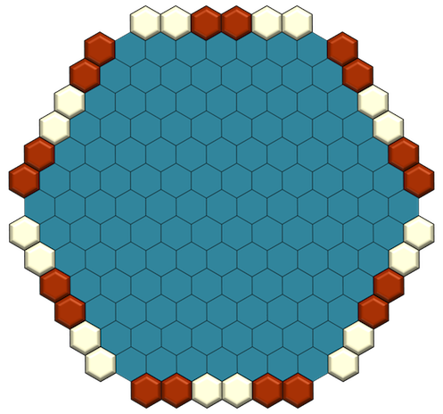
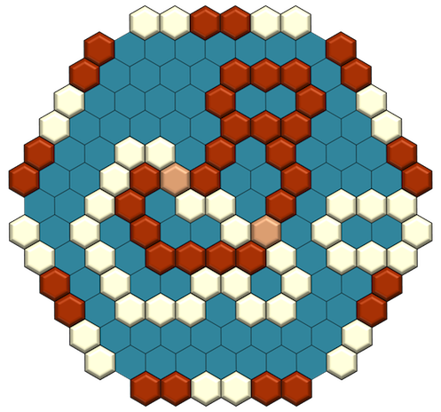

Revised Game: Glorieta 3.0
Nick Bentley
Posted on Nov 23, 2012, 7:16:24 PM
Alot of thought went into this one. Let me know what you think:
http://nickbentleygames.wordpress.com/2012/11/23/revised-game-glorieta-3-0/

This isn't necessarily the last version of Glorieta (but it could be). I've made great progress on the game, using (for a second time) a mechanism that I've not seen anywhere else, so I'm reporting on it. But the more I design games, the more I'm convinced they're never actually done. Every ruleset is just a launchpad for another, better ruleset, always in pursuit of a platonic ideal.
Glorieta is an attempt to design a game on a hex board where the goal is simply to form a connected loop of stones. I'm convinced that the goal has great potential, and it sounds simple enough, but realizing it has proven tricky, especially because I want it to satisfy a bunch of other constraints as well (example: draws should be impossible, and the game should be highly balanced, along with other constraints I won't bother to record here). I've been working on this project on and off for five years, and I have designed many, many (unpublished) games in an attempt to achieve it. Once in a while, I post an example: see here for the preceding version of Glorieta, and here for the one before that, or here for a completely different attempt to solve the problem. Or don't bother, because at the moment I like this new one more.
Equipment: Glorieta is played on a hexhex7 board with red and yellow stones that have an intermediate color (lets call it brown) on their undersides. The board is also surrounded with a ring of red and yellow spaces, as this picture of an empty board illustrates:

Definition - Loop: a connected group of like-colored stones, and (optionally) brown-side-up stones, which completely surrounds one or more spaces, regardless of what's in those spaces. The picture below shows a board that contains two yellow loops and two red loops. Note that loops can also include like-colored spaces that surround the edge of the board (as illustrated by the small yellow loop on the right). The smallest possible loop is six stones/colored spaces surrounding a single space.

Rules
1. The board begins empty. One player owns the yellow stones and the other owns the red. To start, Yellow places a stone on any empty, teal-colored space.
2. Then each player takes six of her stones and holds them in her hand.
3. From then on, starting with Red, the players take turns. On your turn, you must either take 1 or 2 stones from your hand and place them on any empty teal-colored spaces on the board, or you must flip any one of your stones on the board so that it's brown side up. If you run out of stones in your hand, your turn is over. If the board fills completely, you must keep playing by flipping a stone on each turn.
4. You must choose to flip a stone at least once for each handful of stones. You can do so after you've used all the stones from your hand, but before you pick up your next hand of stones, or on any earlier turn. After you've used up all the stones in your hand, and flipped at least one of your own stones, pick up another hand of six stones and continue.
5. The game ends when a loop is formed and the player who owns that loop wins.
Notes
-The game will always end with a loop and there will never be a draw.
-If I've designed the game right, the board will rarely fill completely before a loop forms. In any case, if you'd prefer to play a shorter, more tactical game, just reduce the number of stones in each handful.
-The picture at the top of this page shows a finished game, won by Red, who has a loop near the bottom of the board.
-This mechanism can be applied to any pattern-completion game (as long as empty spaces aren't part of the pattern), and it will make that pattern inevitable. I love this. Since pattern-completion games are a huge category, it's cool to know that if nothing else, this game shows how to make a much wider range of patterns possible as game goals. I mean, a lot of those goals probably won't make for good games, but maybe some of them will.
-What are the novel mechanisms here? There are two: one is the use of neutral stones to make loops (and many other patterns) inevitable. The second (which is actually more just rare than truly novel) is the employment of a “hand” of stones. While “hands” of items like cards are among the oldest game mechanics, they're rarely applied in no-luck, perfect-info, abstract games. It strikes me that there's great scope for innovation here. “Hands” allow you to enforce variety of turn/move types, of many different kinds, in an intuitive way. For example, you can force players to make sequences of hot and cold moves, as is the case in Glorieta: flipping a stone is a cold move, but placing stones are hot moves, and in Glorieta you have a hand of stones to ensure you make a cold move on a certain percentage of your turns. The concept of “hands” is such a general and generally unused idea in abstract games that I plan explore it heavily in future games.
Re: Revised Game: Glorieta 3.0
João Neto
Posted on Nov 26, 2012, 12:57:28 PM
Hi Nick,
The idea of a reserve of available moves is especially interesting to remove
the random factor from a game.
Me and Bill have been using it successfully to 'derandomized' Einstein [1],
by giving each player a reserve of moves from 1 to 6, that must all be
used before
the reserve fills again.
An interesting project would be to build a variant for Backgammon based
on this concept.
Cheers,
João
[1] http://www.boardgamegeek.com/boardgame/18699/einstein-wurfelt-nicht
Re: Revised Game: Glorieta 3.0
Bill Taylor
Posted on Nov 29, 2012, 1:22:01 PM
On Nov 27, 1:57 am, João Pedro Neto wrote:
> Me and Bill have been using it successfully to 'derandomized' Einstein [1],
> by giving each player a reserve of moves from 1 to 6, that must all be
> used before the reserve fills again.
>
> An interesting project would be to build a variant for Backgammon based
> on this concept.
In fact I was about to suggest we start such a game, Joao!
I have had it in mind for quite a while.
The idea is, both players have a full collection of possible
moves in hand: one of each double, and two of each unequal pairs.
(So 36 in all, as is probabilistically "correct".)
Backgammon is then, played with no rolling of dice, but at each
turn the player may pick one of his available moves to play.
So, statistically, the right average proportion of rolls is
used, but in a choosable order.
To start the game, just use PIE in the standard way.
The only thing I'm not sure of, is what to do as the supply
of moves dwindles to near empty. One possibility (that Joao
& I use for Einstein) is to require each player to use up ALL
his unused moves until the supply is empty, at which time the
move reserve is filled with the same 36 over again. This might
be too harsh for backgammon though, as each opponent could
see (at one point at least) exactly what his opponent is forced
to roll next. (We use this option at Einstein, where it is not
very harsh, as several rolls can lead to the same options anyway.)
A second way is, when the move supply gets sufficiently low,
(perhaps 6 moves; 4 moves; 2 moves?) the move supply is
replenished with the 36 cases, leaving the unplayed ones
in there as possible users.
A third option is to have the new 36 "absorb" the unplayed moves,
so there are exactly 36 options again at the restart.
I would be keen to hear what players think of each of these
possible options, or of other comments on this form of
"chanceless backgammon".
-- Backgammoning Bill
*** There is no moral right to "not be offended".
Re: Revised Game: Glorieta 3.0
Nick Bentley
Posted on Nov 29, 2012, 3:54:56 PM
Heh. *of course* you guys have already been using hands. Someday I'll discover something that you haven't already tried, and I'll give myself a little pat on the back.
Another idea:
I was chatting with someone about games where you have a hand of options, and those options dwindle until you run out options and then you get all your options back and start over again. The person I was chatting with said that he didn't like these kinds of games because it made some turns feel awkwardly different from other turns. That lead me to this idea:
A game where you have some "hand" of options. But at the beginning of the game, you order the options in your hand. That order stays fixed for the rest of the game, and you just cycle through your options in the order you set before the game started. Perhaps the ordering could be determined interactively with the other player (I pick the first option in my order, then you choose the next two options in yours, then I choose the next two options in mine, and so on)
Just thinking out loud,
Nick
Re: Revised Game: Glorieta 3.0
João Neto
Posted on Dec 3, 2012, 1:59:47 PM
> Heh. *of course* you guys have already been using hands. Someday I'll
> discover something that you haven't already tried, and I'll give
> myself a little pat on the back.
If we search far enough into the past we will find, more frequently than
we think, some reference to any 'original' idea... If this meta-idea was
already mentioned in a couple of classical authors, confirming itself.
> Another idea:
>
> I was chatting with someone about games where you have a hand of
> options, and those options dwindle until you run out options and then
> you get all your options back and start over again. The person I was
> chatting with said that he didn't like these kinds of games because it
> made some turns feel awkwardly different from other turns.
This is not so bad or uncommon. It provides with good information of
what the other player can do.
The fact that a game has less options at certain moments of its play is
quite common. Sometimes these moments are branded openings, middle
games, and endgames! ;-)
> That lead me to this idea:
>
> A game where you have some "hand" of options. But at the beginning of
> the game, you order the options in your hand. That order stays fixed
> for the rest of the game, and you just cycle through your options in
> the order you set before the game started. Perhaps the ordering could
> be determined interactively with the other player (I pick the first
> option in my order, then you choose the next two options in yours,
> then I choose the next two options in mine, and so on)
Can you give a meaningful example? This seems harder to implement.
JP